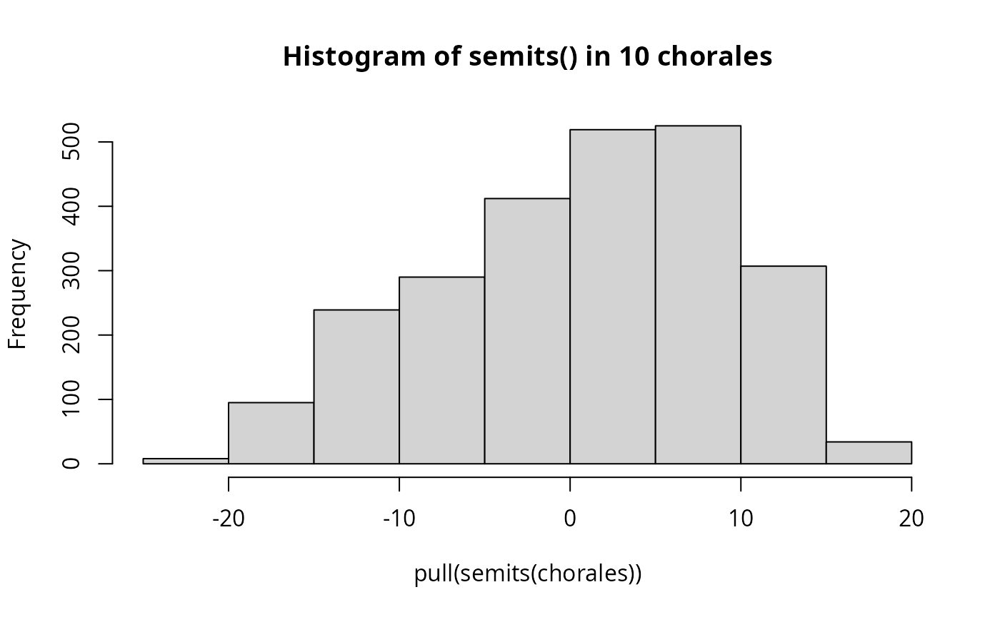
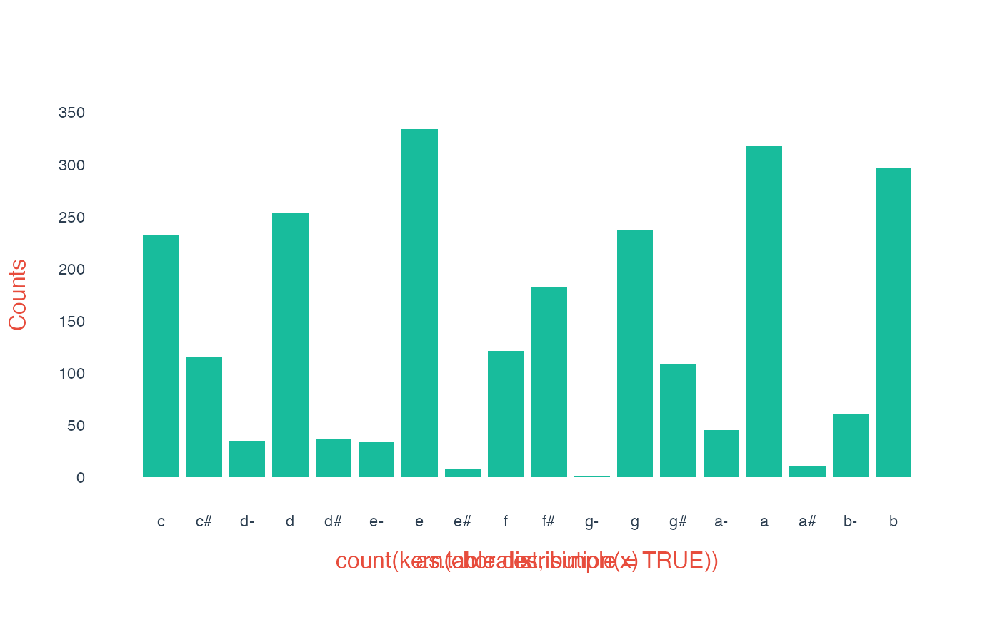
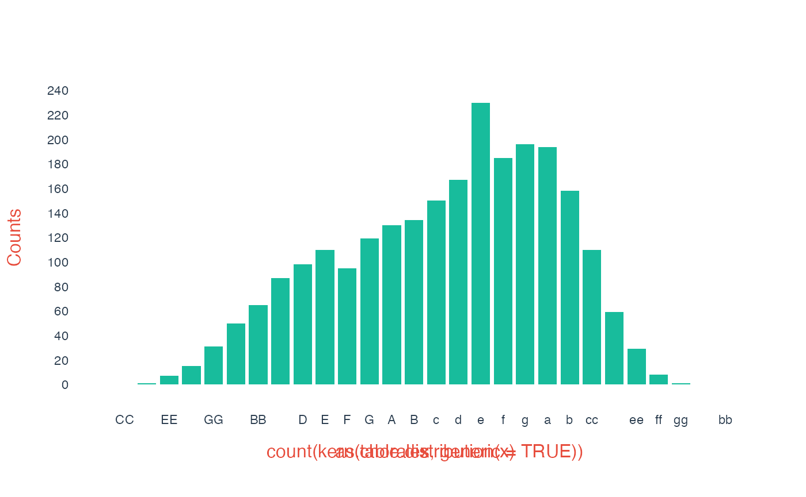
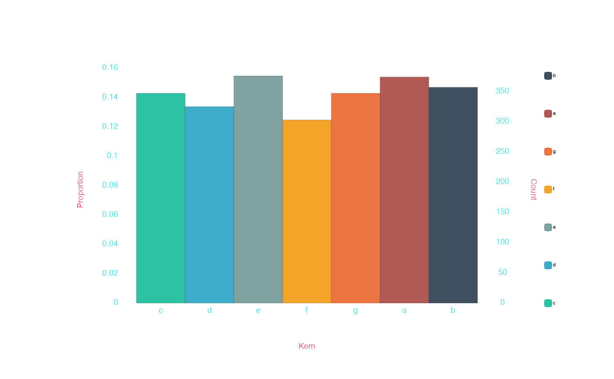
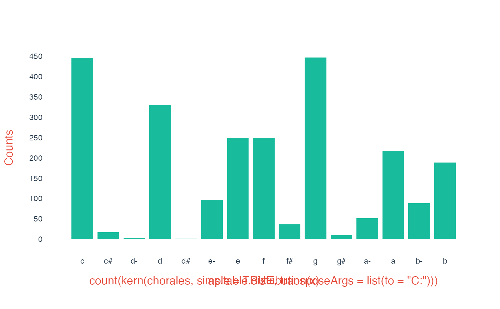
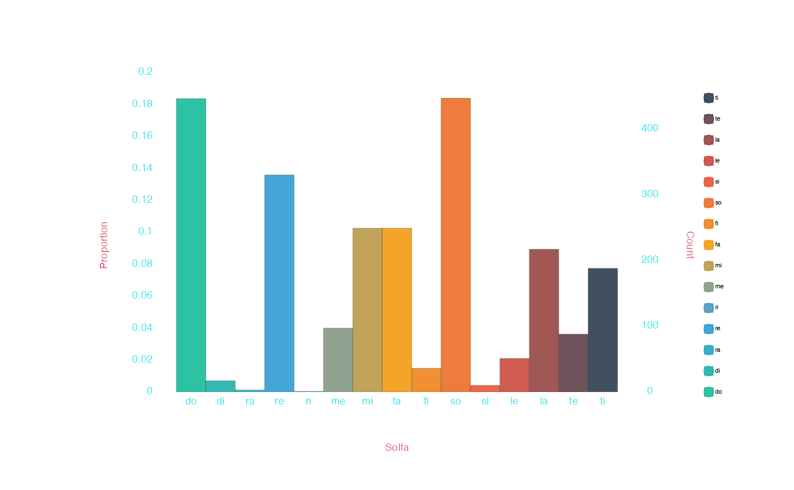

Pitch and tonality in humdrumR
Nathaniel Condit-Schultz
2026-08-01
PitchAndTonality.RmdAs a computational musicology toolkit, humdrum’s tools for analyzing and manipulating pitch data are just about the most important tools in the toolbox. For the most part, humdrum’s pitch tools are focused on the Western system of tonality, and tools for representing pitches in a tonal context are the focus of this vignette—we also have standard tools for looking at pitch from a Western, 12-tone atonal setting as well.
Pitches and Intervals
Humdrum
defines a suite of “pitch functions,” like kern(),
solfa(), interval(), and
semits(). These functions all work in essentially the same
way: they take in an input argument and output pitch information in
their own particular format. For example, let’s take a little bit of
**kern data:
input <- c('4.c', '8d', '4e', '2.g')Notice that this data has both rhythmic information (4.,
8, 4, 2.) and pitch
information (c, d, e,
g). What happens if we give this data to our “pitch
functions”?:
kern(input)
> **kern (character)
> [1] c d e g
interval(input)
> **interval (character)
> [1] P1 +M2 +M3 +P5
semits(input)
> **semits (integer)
> [1] 0 2 4 7
solfa(input)
> **solfa (character)
> [1] do re mi soEach function correctly reads the **kern pitch
information, ignoring the rhythm information, and outputs the pitch
information in a different format. This allows us to “translate” between
different ways of representing pitch information.
If you want to keep the non-pitch (rhythm) information, use
the inPlace argument:
kern(input, inPlace = TRUE)
> [1] "4.c" "8d" "4e" "2.g"
interval(input, inPlace = TRUE)
> [1] "4.P1" "8+M2" "4+M3" "2.+P5"
semits(input, inPlace = TRUE)
> [1] "4.0" "82" "44" "2.7"
solfa(input, inPlace = TRUE)
> [1] "4.do" "8re" "4mi" "2.so"The cool thing is that each of these functions can read any of the other functions’ output. So you can do things like:
kern('Cb6')
> **kern (character)
> [1] ccc-
pitch("eee-")
> **pitch (character)
> [1] Eb6
pitch(-4) # semits
> **pitch (character)
> [1] Ab3
kern('-4')
> **kern (character)
> [1] f
solfa('A#6')
> **solfa (character)
> [1] ^^li
semits('Ab3')
> **semits (integer)
> [1] -4The complete list of basic pitch functions is:
-
Tonal pitch representations
-
Absolute pitch representations
kernpitchlilypondhelmholtz-
tonh(German-style notation)
-
Relative pitch representations
interval-
solfa(relative-do solfege) -
solfg(French-style fixed-do solfege) -
degree(absolute scale degrees) -
deg(melodic scale degrees) -
bhatk(hindustani swara)
-
Partial pitch representations
stepaccidentalqualityoctave
-
Absolute pitch representations
-
Atonal pitch representations
-
Musical pitch representations
semitsmidicents-
pc(pitch classes)
-
Physical pitch representations
freq
-
Musical pitch representations
Each one of these functions represents a different way of representing equivalent pitch information.
Documentation
The global documentation for all the pitch functions can be
seen by calling ?pitchFunctions. You can also call
documentation for any individual function, like ?kern.
Scale degree
Some pitch representations encode scale degree,
which depends on the key. We can use the Key argument to
control how our pitch functions interpret key—either translating
from degrees to absolute pitches, or vice versa. Pass the
Key argument a humdrum key interpretation, like
c: (c minor) or A-: (a-flat major).
absoluteInput <- c('c', 'd-', 'e-', 'g', 'a-')
solfa(absoluteInput)
> **solfa (character)
> [1] do ra me so le
solfa(absoluteInput, Key = 'A-:')
> **solfa (character)
> [1] mi fa so ti do
degreeInput <- c('do', 're', 'mi', 'fi', 'so')
kern(degreeInput)
> **kern (character)
> [1] c d e f# g
kern(degreeInput, Key = 'A-:')
> **kern (character)
> [1] a- b- cc dd ee-The Key argument is vectorized (see the R primer if you don’t know what that means!);
that means that you can actually read information with
different/changing keys.
Working with pitch representations
Let’s have a look at using pitch functions on real data. Let’s load humdrum’s built-in Bach chorales:
chorales <- readHumdrum(humdrumRroot, 'HumdrumData/BachChorales/.*krn')These chorales are full of **kern data in the (default)
Token field, which can easily be parsed/translated. Maybe
we’d like to convert the **kern to semitones.
Humdrum’s
pitch functions can all be used in humdrum-style,
so using semits() is very easy:
chorales |>
semits()> ######################## vvv chor001.krn vvv #########################
> 1: !!!COM: Bach, Johann Sebastian
> 2: !!!CDT: 1685/02/21/-1750/07/28/
> 3: !!!OTL@@DE: Aus meines Herzens Grunde
> 4: !!!OTL@EN: From the Depths of My Heart
> 5: !!!SCT: BWV 269
> 6: !!!PC#: 1
> 7: !!!AGN: chorale
> 8: **semits **semits **semits **semits
> 9: . . . .
> 10: . . . .
> 11: . . . .
> 12: *>[A,A,B] *>[A,A,B] *>[A,A,B] *>[A,A,B]
> 13: *>norep[A,B] *>norep[A,B] *>norep[A,B] *>norep[A,B]
> 14: *>A *>A *>A *>A
> 15: *clefF4 *clefGv2 *clefG2 *clefG2
> 16: . . . .
> 17: . . . .
> 18: . . . .
> 19: . . . .
> 20: -17 -1 2 7
> 21: =1 =1 =1 =1
> 22: -5 -1 2 7
> 23: -8 0 4 .
> 24: . -1 . .
> 25: -6 -3 2 14
> 26: =2 =2 =2 =2
> 27: -5 -5 2 11
> 28: -10 -6 . .
> 29: . . . 9
> 30: -8 -5 -1 7
> 31-133::::::::::::::::::::::::::::::::::::::::::::::::::::::::::::::::
> ######################## ^^^ chor001.krn ^^^ #########################
>
> (eight more pieces...)
>
> ######################## vvv chor010.krn vvv #########################
> 1-70::::::::::::::::::::::::::::::::::::::::::::::::::::::::::::::::
> 71: -10 -6 2 11
> 72: . -5 . .
> 73: -10 . 0 9
> 74: . -6 . .
> 75: -17 -5 -1 7
> 76: =11 =11 =11 =11
> 77: -12 -5 4 7
> 78: -15 -3 4 12
> 79: -8 -4 4 11
> 80: . . 2 .
> 81: =12 =12 =12 =12
> 82: -7 -3 0 9
> 83: -12 -5 0 4
> 84: -14 -5 2 7
> 85: -15 -3 . 5
> 86: =13 =13 =13 =13
> 87: -16 -1 2 4
> 88: -15 -3 0 .
> 89: -20 -4 -1 .
> 90: == == == ==
> 91: *- *- *- *-
> 92: !!!hum2abc: -Q ''
> 93: !!!title: @{PC#}. @{OTL@@DE}
> 94: !!!YOR1: 371 vierstimmige Choralgesänge von Johann Sebastian B***
> 95: !!!YOR2: 4th ed. by Alfred Dörffel (Leipzig: Breitkopf und H&a***
> 96: !!!YOR2: c.1875). 178 pp. Plate "V.A.10". reprint: J.S. Bach, 371 ***
> 97: !!!YOR4: Chorales (New York: Associated Music Publishers, Inc., c.1***
> 98: !!!SMS: B&H, 4th ed, Alfred Dörffel, c.1875, plate V.A.10
> 99: !!!EED: Craig Stuart Sapp
> 100: !!!EEV: 2009/05/22
> ######################## ^^^ chor010.krn ^^^ #########################
> (***four global comments truncated due to screen size***)
>
> humdrumR corpus of ten pieces.
>
> Data fields:
> *Semits :: integer (**semits tokens)
> Token :: characterWe could then, for instance, make a histogram of the semitone values:

Keys
The chorale dataset has key information in its built-in
Key field. If we use a pitch function in humdrum- or -tidy
style, the Key field is automatically passed as a
Key argument to the function! That means if we apply
solfa(), we will get the correct scale degrees,
given the keys in the data:
chorales |>
solfa(Token)> ######################## vvv chor001.krn vvv #########################
> 1: !!!COM: Bach, Johann Sebastian
> 2: !!!CDT: 1685/02/21/-1750/07/28/
> 3: !!!OTL@@DE: Aus meines Herzens Grunde
> 4: !!!OTL@EN: From the Depths of My Heart
> 5: !!!SCT: BWV 269
> 6: !!!PC#: 1
> 7: !!!AGN: chorale
> 8: **solfa **solfa **solfa **solfa
> 9: . . . .
> 10: . . . .
> 11: . . . .
> 12: *>[A,A,B] *>[A,A,B] *>[A,A,B] *>[A,A,B]
> 13: *>norep[A,B] *>norep[A,B] *>norep[A,B] *>norep[A,B]
> 14: *>A *>A *>A *>A
> 15: *clefF4 *clefGv2 *clefG2 *clefG2
> 16: *k[f#] *k[f#] *k[f#] *k[f#]
> 17: *G: *G: *G: *G:
> 18: . . . .
> 19: . . . .
> 20: vvdo vmi so do
> 21: =1 =1 =1 =1
> 22: vdo vmi so do
> 23: vla fa la .
> 24: . vmi . .
> 25: vti vre so ^so
> 26: =2 =2 =2 =2
> 27: vdo vdo so mi
> 28: vso vti . .
> 29: . . . re
> 30: vla vdo vmi do
> 31-133::::::::::::::::::::::::::::::::::::::::::::::::::::::::::::::::
> ######################## ^^^ chor001.krn ^^^ #########################
>
> (eight more pieces...)
>
> ######################## vvv chor010.krn vvv #########################
> 1-70::::::::::::::::::::::::::::::::::::::::::::::::::::::::::::::::
> 71: vfa vla fa re
> 72: . vte . .
> 73: vfa . me do
> 74: . vla . .
> 75: vvte vte vre te
> 76: =11 =11 =11 =11
> 77: vme vte so te
> 78: vvdo vdo so ^me
> 79: vso vti so re
> 80: . . fa .
> 81: =12 =12 =12 =12
> 82: vle vdo me do
> 83: vme vte me so
> 84: vvra vte fa te
> 85: vvdo vdo . le
> 86: =13 =13 =13 =13
> 87: vvti vre fa so
> 88: vvdo vdo me .
> 89: vvso vti vre .
> 90: == == == ==
> 91: *- *- *- *-
> 92: !!!hum2abc: -Q ''
> 93: !!!title: @{PC#}. @{OTL@@DE}
> 94: !!!YOR1: 371 vierstimmige Choralgesänge von Johann Sebastian B***
> 95: !!!YOR2: 4th ed. by Alfred Dörffel (Leipzig: Breitkopf und H&a***
> 96: !!!YOR2: c.1875). 178 pp. Plate "V.A.10". reprint: J.S. Bach, 371 ***
> 97: !!!YOR4: Chorales (New York: Associated Music Publishers, Inc., c.1***
> 98: !!!SMS: B&H, 4th ed, Alfred Dörffel, c.1875, plate V.A.10
> 99: !!!EED: Craig Stuart Sapp
> 100: !!!EEV: 2009/05/22
> ######################## ^^^ chor010.krn ^^^ #########################
> (***four global comments truncated due to screen size***)
>
> humdrumR corpus of ten pieces.
>
> Data fields:
> *Solfa :: character (**solfa tokens)
> Token :: characterRests
**kern data, like in these chorales, includes
rests, indicated by r in place of a pitch. What
happens when a pitch function sees a rest in our data? Let’s see:
The rest token, is output as a null (.) value—this null
. is actually an R NA value. In fact, any
token in the input which fails to parse as pitch will return as
. (NA). For example:
Pitch arguments
Since all the “pitch functions” do the same sort of task, they share
a number of common arguments. The complete list of these pitch arguments
can be found in the ?pitchParsing and
?pitchDeparsing pages, but the most important ones are
described here:
Generic vs Specific pitch
All pitch functions accept logical (TRUE or
FALSE) generic and specific
arguments. If generic == TRUE, only generic pitch
information is returned. This affects different pitch representations in
different ways:
- For representations like
kern(),pitch()andlilypond(), no accidentals are included in generic output; - For
intervals(), the interval quality is removed; - For
solfa, scale degree four will be “fa”, never “fi” (sharp four).
The specific argument is simply the opposite of
generic, so you have the choice of indicating
genric = TRUE or specific = FALSE—they are
equivalent.
In code:
input <- c('E', 'G#', 'A', 'B-', 'F#', 'G')
pitch(input, generic = FALSE)
> **pitch (character)
> [1] E3 G#3 A3 Bb3 F#3 G3
pitch(input, generic = TRUE)
> **pitch (character)
> [1] E3 G3 A3 B3 F3 G3
interval(input, specific = TRUE)
> **interval (character)
> [1] -m6 -d4 -m3 -M2 -d5 -P4
interval(input, generic = TRUE)
> **interval (character)
> [1] -6 -4 -3 -2 -5 -4
solfa(input, specific = TRUE)
> **solfa (character)
> [1] vmi vsi vla vte vfi vso
solfa(input, specific = FALSE)
> **solfa (character)
> [1] vmi vso vla vti vfa vsoSimple vs Compound pitch
All pitch functions accept logical (TRUE or
FALSE) simple and compound
arguments. If simple == TRUE, octave information is
stripped from the output, leaving only “simple” pitch information. This
affects different pitch representations in different ways:
- For
pitch()anddegree(), the octave number is removed. - For
lilypond()andhelmholtz(), the octave marks'and,are removed. - For
solfa()anddeg(), the contour indicators (explanation below)vand^are removed. - For
interval(), only steps between 1–7 and returned (i.e., no 10ths).
The compound argument is simply the opposite of
simple, so you have the choice of indicating
simple = TRUE or compound = FALSE—they are
equivalent.
In code:
input <- c('c', 'a', 'dd#', 'ee', 'G', 'GG', 'GG-', 'CCC')
degree(input, simple = FALSE)
> **degree (character)
> [1] 1/4 6/4 2+/5 3/5 5/3 5/2 5-/2 1/1
degree(input, simple = TRUE)
> **degree (character)
> [1] 1 6 2+ 3 5 5 5- 1
lilypond(input, compound = TRUE)
> **lilypond (character)
> [1] c' a' dis'' e'' g g, ges, c,,
lilypond(input, simple = TRUE)
> **lilypond (character)
> [1] c a dis e g g ges c
semits(input, compound = TRUE)
> **semits (integer)
> [1] 0 9 15 16 -5 -17 -18 -36
semits(input, compound = FALSE)
> **semits (integer)
> [1] 0 9 3 4 7 7 6 0
solfa(input, compound = TRUE)
> **solfa (character)
> [1] do la ^ri ^mi vso vvso vvse vvvdo
solfa(input, compound = FALSE)
> **solfa (character)
> [1] do la ri mi so so se do
interval(input, simple = FALSE)
> **interval (character)
> [1] P1 +M6 +A9 +M10 -P4 -P11 -A11 -P22
interval(input, simple = TRUE)
> **interval (character)
> [1] P1 +M6 +A2 +M3 -P4 -P4 -A4 -P1Working with pitch arguments
The generic and simple arguments are useful
if you want to tabulate pitch classes, for example:
chorales <- readHumdrum(humdrumRroot, 'HumdrumData/BachChorales/.*krn')
chorales |>
kern(simple = TRUE) |>
count() |>
draw()


Transposition
All of
humdrum’s
pitch functions have built-in transposition functionality. You can use
this functionality by passing a named list of arguments to the
transpose() function, as the transposeArgs
argument to the pitch function call, like in this example using the
by argument:
kern(c('c', 'd', 'e', 'f', 'f#', 'g'), transposeArgs = list(by = 'M2'))
> **kern (character)
> [1] d e f# g g# aAnother option is to transpose by key. You can the to
argument through to tranpose(). Let’s say we have music in
A major that we’d like to transpose to C major:
Amelody <- c('8A', '8B', '4.c#', '16d', '8c#','8f#', '8e', '8d#', '4e')
kern(Amelody, Key = 'A:', transposeArgs = list(to = 'C:'))
> **kern (character)
> [1] C D E F E A G F# GSo the Key argument to kern() indicates the
key the music is coming from, and the to argument in
tranposeArgs indicates where to transpose it to. Since
humdrum/tidy functions automatically use Key information
from a data set, this makes it very easy to, say, transpose all
**kern tokens in your data to C major:
chorales <- readHumdrum(humdrumRroot, 'HumdrumData/BachChorales/.*krn')
chorales |>
kern(simple = TRUE, transposeArgs = list(to = 'C:')) |>
count() |>
draw()
This looks exactly like calling solfa():

Melody and Harmony
Melodic Intervals
What if we want to calculate melodic intervals in each part of a
score? This the purpose of the mint() (melodic intervals)
command. We can use mint() on any pitch data:
input <- c('d', 'B-', 'A', 'G', 'D', 'd', 'B-', 'G#', 'A', 'f', 'e', 'd')
mint(input)
> **interval (character)
> [1] [d] -M3 -m2 -M2 -P4 +P8 -M3 -d3 +m2 +m6 -m2 -M2If you use mint() in humdrum- or tidy- style on a
humdrum
dataobject, mint() will automatically be called within each
spine/path in each file (this is accomplished using the
groupby argument to mint()):
chorales <- readHumdrum(humdrumRroot, 'HumdrumData/BachChorales/.*krn')
chorales |>
mint()> ######################## vvv chor001.krn vvv #########################
> 1: !!!COM: Bach, Johann Sebastian
> 2: !!!CDT: 1685/02/21/-1750/07/28/
> 3: !!!OTL@@DE: Aus meines Herzens Grunde
> 4: !!!OTL@EN: From the Depths of My Heart
> 5: !!!SCT: BWV 269
> 6: !!!PC#: 1
> 7: !!!AGN: chorale
> 8: **interval **interval **interval **interval
> 9: . . . .
> 10: . . . .
> 11: . . . .
> 12: *>[A,A,B] *>[A,A,B] *>[A,A,B] *>[A,A,B]
> 13: *>norep[A,B] *>norep[A,B] *>norep[A,B] *>norep[A,B]
> 14: *>A *>A *>A *>A
> 15: *clefF4 *clefGv2 *clefG2 *clefG2
> 16: *k[f#] *k[f#] *k[f#] *k[f#]
> 17: *G: *G: *G: *G:
> 18: . . . .
> 19: . . . .
> 20: [GG] [B] [d] [g]
> 21: =1 =1 =1 =1
> 22: +P8 P1 P1 P1
> 23: -m3 +m2 +M2 .
> 24: . -m2 . .
> 25: +M2 -M2 -M2 +P5
> 26: =2 =2 =2 =2
> 27: +m2 -M2 P1 -m3
> 28: -P4 -m2 . .
> 29: . . . -M2
> 30: +M2 +m2 -m3 -M2
> 31-133::::::::::::::::::::::::::::::::::::::::::::::::::::::::::::::::
> ######################## ^^^ chor001.krn ^^^ #########################
>
> (eight more pieces...)
>
> ######################## vvv chor010.krn vvv #########################
> 1-70::::::::::::::::::::::::::::::::::::::::::::::::::::::::::::::::
> 71: +M2 -d5 -M2 +M3
> 72: . +m2 . .
> 73: P1 . -M2 -M2
> 74: . -m2 . .
> 75: -P5 +m2 -m2 -M2
> 76: =11 =11 =11 =11
> 77: +P4 P1 +P4 P1
> 78: -m3 +M2 P1 +P4
> 79: +P5 -m2 P1 -m2
> 80: . . -M2 .
> 81: =12 =12 =12 =12
> 82: +m2 +m2 -M2 -M2
> 83: -P4 -M2 P1 -P4
> 84: -M2 P1 +M2 +m3
> 85: -m2 +M2 . -M2
> 86: =13 =13 =13 =13
> 87: -m2 +M2 P1 -m2
> 88: +m2 -M2 -M2 .
> 89: -P4 -m2 -m2 .
> 90: == == == ==
> 91: *- *- *- *-
> 92: !!!hum2abc: -Q ''
> 93: !!!title: @{PC#}. @{OTL@@DE}
> 94: !!!YOR1: 371 vierstimmige Choralgesänge von Johann Sebastian B***
> 95: !!!YOR2: 4th ed. by Alfred Dörffel (Leipzig: Breitkopf und H&a***
> 96: !!!YOR2: c.1875). 178 pp. Plate "V.A.10". reprint: J.S. Bach, 371 ***
> 97: !!!YOR4: Chorales (New York: Associated Music Publishers, Inc., c.1***
> 98: !!!SMS: B&H, 4th ed, Alfred Dörffel, c.1875, plate V.A.10
> 99: !!!EED: Craig Stuart Sapp
> 100: !!!EEV: 2009/05/22
> ######################## ^^^ chor010.krn ^^^ #########################
> (***four global comments truncated due to screen size***)
>
> humdrumR corpus of ten pieces.
>
> Data fields:
> *Mint :: character (**interval tokens)
> Token :: charactermint() has a number of special options, which you can
read about in the manual by checking out ?mint. For now,
we’ll just show you the classify argument, which can be
used to classify output intervals as either Unison,
Step, Skip, or Leap:
chorales |>
mint(classify = TRUE)> ######################## vvv chor001.krn vvv #########################
> 1: !!!COM: Bach, Johann Sebastian
> 2: !!!CDT: 1685/02/21/-1750/07/28/
> 3: !!!OTL@@DE: Aus meines Herzens Grunde
> 4: !!!OTL@EN: From the Depths of My Heart
> 5: !!!SCT: BWV 269
> 6: !!!PC#: 1
> 7: !!!AGN: chorale
> 8: **kern **kern **kern **kern
> 9: *ICvox *ICvox *ICvox *ICvox
> 10: *Ibass *Itenor *Ialto *Isoprn
> 11: *I"Bass *I"Tenor *I"Alto *I"Soprano
> 12: *>[A,A,B] *>[A,A,B] *>[A,A,B] *>[A,A,B]
> 13: *>norep[A,B] *>norep[A,B] *>norep[A,B] *>norep[A,B]
> 14: *>A *>A *>A *>A
> 15: *clefF4 *clefGv2 *clefG2 *clefG2
> 16: *k[f#] *k[f#] *k[f#] *k[f#]
> 17: *G: *G: *G: *G:
> 18: *M3/4 *M3/4 *M3/4 *M3/4
> 19: *MM100 *MM100 *MM100 *MM100
> 20: [GG] [B] [d] [g]
> 21: =1 =1 =1 =1
> 22: +Unison Unison Unison Unison
> 23: -Skip +Step +Step .
> 24: . -Step . .
> 25: +Step -Step -Step +Leap
> 26: =2 =2 =2 =2
> 27: +Step -Step Unison -Skip
> 28: -Leap -Step . .
> 29: . . . -Step
> 30: +Step +Step -Skip -Step
> 31-133::::::::::::::::::::::::::::::::::::::::::::::::::::::::::::::::
> ######################## ^^^ chor001.krn ^^^ #########################
>
> (eight more pieces...)
>
> ######################## vvv chor010.krn vvv #########################
> 1-70::::::::::::::::::::::::::::::::::::::::::::::::::::::::::::::::
> 71: +Step -Leap -Step +Skip
> 72: . +Step . .
> 73: Unison . -Step -Step
> 74: . -Step . .
> 75: -Leap +Step -Step -Step
> 76: =11 =11 =11 =11
> 77: +Leap Unison +Leap Unison
> 78: -Skip +Step Unison +Leap
> 79: +Leap -Step Unison -Step
> 80: . . -Step .
> 81: =12 =12 =12 =12
> 82: +Step +Step -Step -Step
> 83: -Leap -Step Unison -Leap
> 84: -Step Unison +Step +Skip
> 85: -Step +Step . -Step
> 86: =13 =13 =13 =13
> 87: -Step +Step Unison -Step
> 88: +Step -Step -Step .
> 89: -Leap -Step -Step .
> 90: == == == ==
> 91: *- *- *- *-
> 92: !!!hum2abc: -Q ''
> 93: !!!title: @{PC#}. @{OTL@@DE}
> 94: !!!YOR1: 371 vierstimmige Choralgesänge von Johann Sebastian B***
> 95: !!!YOR2: 4th ed. by Alfred Dörffel (Leipzig: Breitkopf und H&a***
> 96: !!!YOR2: c.1875). 178 pp. Plate "V.A.10". reprint: J.S. Bach, 371 ***
> 97: !!!YOR4: Chorales (New York: Associated Music Publishers, Inc., c.1***
> 98: !!!SMS: B&H, 4th ed, Alfred Dörffel, c.1875, plate V.A.10
> 99: !!!EED: Craig Stuart Sapp
> 100: !!!EEV: 2009/05/22
> ######################## ^^^ chor010.krn ^^^ #########################
> (***four global comments truncated due to screen size***)
>
> humdrumR corpus of ten pieces.
>
> Data fields:
> *Mint :: character
> Token :: characterHarmonic intervals
In parallel to mint() is hint() (harmonic
intervals) command. hint() works just like
mint() except it calculates intervals from left to right in
each record of a file:
chorales |>
hint()> ######################## vvv chor001.krn vvv #########################
> 1: !!!COM: Bach, Johann Sebastian
> 2: !!!CDT: 1685/02/21/-1750/07/28/
> 3: !!!OTL@@DE: Aus meines Herzens Grunde
> 4: !!!OTL@EN: From the Depths of My Heart
> 5: !!!SCT: BWV 269
> 6: !!!PC#: 1
> 7: !!!AGN: chorale
> 8: **interval **interval **interval **interval
> 9: . . . .
> 10: . . . .
> 11: . . . .
> 12: *>[A,A,B] *>[A,A,B] *>[A,A,B] *>[A,A,B]
> 13: *>norep[A,B] *>norep[A,B] *>norep[A,B] *>norep[A,B]
> 14: *>A *>A *>A *>A
> 15: *clefF4 *clefGv2 *clefG2 *clefG2
> 16: *k[f#] *k[f#] *k[f#] *k[f#]
> 17: *G: *G: *G: *G:
> 18: . . . .
> 19: . . . .
> 20: [GG] +M10 +m3 +P4
> 21: =1 =1 =1 =1
> 22: [G] +M3 +m3 +P4
> 23: [E] +m6 +M3 .
> 24: . [B] . .
> 25: [F#] +m3 +P4 +P8
> 26: =2 =2 =2 =2
> 27: [G] P1 +P5 +M6
> 28: [D] +M3 . .
> 29: . . . [a]
> 30: [E] +m3 +M3 +m6
> 31-133::::::::::::::::::::::::::::::::::::::::::::::::::::::::::::::::
> ######################## ^^^ chor001.krn ^^^ #########################
>
> (eight more pieces...)
>
> ######################## vvv chor010.krn vvv #########################
> 1-70::::::::::::::::::::::::::::::::::::::::::::::::::::::::::::::::
> 71: [D] +M3 +m6 +M6
> 72: . [G] . .
> 73: [D] . +m7 +M6
> 74: . [F#] . .
> 75: [GG] +P8 +M3 +m6
> 76: =11 =11 =11 =11
> 77: [C] +P5 +M6 +m3
> 78: [AA] +P8 +P5 +m6
> 79: [E] +M3 +m6 +P5
> 80: . . [d] .
> 81: =12 =12 =12 =12
> 82: [F] +M3 +m3 +M6
> 83: [C] +P5 +P4 +M3
> 84: [BB-] +M6 +P5 +P4
> 85: [AA] +P8 . +m6
> 86: =13 =13 =13 =13
> 87: [GG#] +m10 +m3 +M2
> 88: [AA] +P8 +m3 .
> 89: [EE] +M10 +m3 .
> 90: == == == ==
> 91: *- *- *- *-
> 92: !!!hum2abc: -Q ''
> 93: !!!title: @{PC#}. @{OTL@@DE}
> 94: !!!YOR1: 371 vierstimmige Choralgesänge von Johann Sebastian B***
> 95: !!!YOR2: 4th ed. by Alfred Dörffel (Leipzig: Breitkopf und H&a***
> 96: !!!YOR2: c.1875). 178 pp. Plate "V.A.10". reprint: J.S. Bach, 371 ***
> 97: !!!YOR4: Chorales (New York: Associated Music Publishers, Inc., c.1***
> 98: !!!SMS: B&H, 4th ed, Alfred Dörffel, c.1875, plate V.A.10
> 99: !!!EED: Craig Stuart Sapp
> 100: !!!EEV: 2009/05/22
> ######################## ^^^ chor010.krn ^^^ #########################
> (***four global comments truncated due to screen size***)
>
> humdrumR corpus of ten pieces.
>
> Data fields:
> *Hint :: character (**interval tokens)
> Token :: characterA special trick is to use the lag argument to calculate
harmonic intervals all in relation to the same spine. For example, you
can calculate harmonic intervals between each voice and the bass voice
like so:
chorales |>
hint(lag = Spine == 1)> ######################## vvv chor001.krn vvv #########################
> 1: !!!COM: Bach, Johann Sebastian
> 2: !!!CDT: 1685/02/21/-1750/07/28/
> 3: !!!OTL@@DE: Aus meines Herzens Grunde
> 4: !!!OTL@EN: From the Depths of My Heart
> 5: !!!SCT: BWV 269
> 6: !!!PC#: 1
> 7: !!!AGN: chorale
> 8: **interval **interval **interval **interval
> 9: . . . .
> 10: . . . .
> 11: . . . .
> 12: *>[A,A,B] *>[A,A,B] *>[A,A,B] *>[A,A,B]
> 13: *>norep[A,B] *>norep[A,B] *>norep[A,B] *>norep[A,B]
> 14: *>A *>A *>A *>A
> 15: *clefF4 *clefGv2 *clefG2 *clefG2
> 16: *k[f#] *k[f#] *k[f#] *k[f#]
> 17: *G: *G: *G: *G:
> 18: . . . .
> 19: . . . .
> 20: [GG] +M10 +P12 +P15
> 21: =1 =1 =1 =1
> 22: [G] +M3 +P5 +P8
> 23: [E] +m6 +P8 .
> 24: . [B] . .
> 25: [F#] +m3 +m6 +m13
> 26: =2 =2 =2 =2
> 27: [G] P1 +P5 +M10
> 28: [D] +M3 . .
> 29: . . . [a]
> 30: [E] +m3 +P5 +m10
> 31-133::::::::::::::::::::::::::::::::::::::::::::::::::::::::::::::::
> ######################## ^^^ chor001.krn ^^^ #########################
>
> (eight more pieces...)
>
> ######################## vvv chor010.krn vvv #########################
> 1-70::::::::::::::::::::::::::::::::::::::::::::::::::::::::::::::::
> 71: [D] +M3 +P8 +M13
> 72: . [G] . .
> 73: [D] . +m7 +P12
> 74: . [F#] . .
> 75: [GG] +P8 +M10 +P15
> 76: =11 =11 =11 =11
> 77: [C] +P5 +M10 +P12
> 78: [AA] +P8 +P12 +m17
> 79: [E] +M3 +P8 +P12
> 80: . . [d] .
> 81: =12 =12 =12 =12
> 82: [F] +M3 +P5 +M10
> 83: [C] +P5 +P8 +M10
> 84: [BB-] +M6 +M10 +M13
> 85: [AA] +P8 . +m13
> 86: =13 =13 =13 =13
> 87: [GG#] +m10 +d12 +m13
> 88: [AA] +P8 +m10 .
> 89: [EE] +M10 +P12 .
> 90: == == == ==
> 91: *- *- *- *-
> 92: !!!hum2abc: -Q ''
> 93: !!!title: @{PC#}. @{OTL@@DE}
> 94: !!!YOR1: 371 vierstimmige Choralgesänge von Johann Sebastian B***
> 95: !!!YOR2: 4th ed. by Alfred Dörffel (Leipzig: Breitkopf und H&a***
> 96: !!!YOR2: c.1875). 178 pp. Plate "V.A.10". reprint: J.S. Bach, 371 ***
> 97: !!!YOR4: Chorales (New York: Associated Music Publishers, Inc., c.1***
> 98: !!!SMS: B&H, 4th ed, Alfred Dörffel, c.1875, plate V.A.10
> 99: !!!EED: Craig Stuart Sapp
> 100: !!!EEV: 2009/05/22
> ######################## ^^^ chor010.krn ^^^ #########################
> (***four global comments truncated due to screen size***)
>
> humdrumR corpus of ten pieces.
>
> Data fields:
> *Hint :: character (**interval tokens)
> Token :: characterOr, harmonic intervals from the soprano like so:
chorales |>
hint(lag = Spine == 4)> ######################## vvv chor001.krn vvv #########################
> 1: !!!COM: Bach, Johann Sebastian
> 2: !!!CDT: 1685/02/21/-1750/07/28/
> 3: !!!OTL@@DE: Aus meines Herzens Grunde
> 4: !!!OTL@EN: From the Depths of My Heart
> 5: !!!SCT: BWV 269
> 6: !!!PC#: 1
> 7: !!!AGN: chorale
> 8: **interval **interval **interval **interval
> 9: . . . .
> 10: . . . .
> 11: . . . .
> 12: *>[A,A,B] *>[A,A,B] *>[A,A,B] *>[A,A,B]
> 13: *>norep[A,B] *>norep[A,B] *>norep[A,B] *>norep[A,B]
> 14: *>A *>A *>A *>A
> 15: *clefF4 *clefGv2 *clefG2 *clefG2
> 16: *k[f#] *k[f#] *k[f#] *k[f#]
> 17: *G: *G: *G: *G:
> 18: . . . .
> 19: . . . .
> 20: -P15 -m6 -P4 [g]
> 21: =1 =1 =1 =1
> 22: -P8 -m6 -P4 [g]
> 23: [E] [c] [e] .
> 24: . [B] . .
> 25: -m13 -P11 -P8 [dd]
> 26: =2 =2 =2 =2
> 27: -M10 -M10 -M6 [b]
> 28: [D] [F#] . .
> 29: . . . [a]
> 30: -m10 -P8 -m6 [g]
> 31-133::::::::::::::::::::::::::::::::::::::::::::::::::::::::::::::::
> ######################## ^^^ chor001.krn ^^^ #########################
>
> (eight more pieces...)
>
> ######################## vvv chor010.krn vvv #########################
> 1-70::::::::::::::::::::::::::::::::::::::::::::::::::::::::::::::::
> 71: -M13 -P11 -M6 [b]
> 72: . [G] . .
> 73: -P12 . -M6 [a]
> 74: . [F#] . .
> 75: -P15 -P8 -m6 [g]
> 76: =11 =11 =11 =11
> 77: -P12 -P8 -m3 [g]
> 78: -m17 -m10 -m6 [cc]
> 79: -P12 -m10 -P5 [b]
> 80: . . [d] .
> 81: =12 =12 =12 =12
> 82: -M10 -P8 -M6 [a]
> 83: -M10 -M6 -M3 [e]
> 84: -M13 -P8 -P4 [g]
> 85: -m13 -m6 . [f]
> 86: =13 =13 =13 =13
> 87: -m13 -P4 -M2 [e]
> 88: [AA] [A] [c] .
> 89: [EE] [G#] [B] .
> 90: == == == ==
> 91: *- *- *- *-
> 92: !!!hum2abc: -Q ''
> 93: !!!title: @{PC#}. @{OTL@@DE}
> 94: !!!YOR1: 371 vierstimmige Choralgesänge von Johann Sebastian B***
> 95: !!!YOR2: 4th ed. by Alfred Dörffel (Leipzig: Breitkopf und H&a***
> 96: !!!YOR2: c.1875). 178 pp. Plate "V.A.10". reprint: J.S. Bach, 371 ***
> 97: !!!YOR4: Chorales (New York: Associated Music Publishers, Inc., c.1***
> 98: !!!SMS: B&H, 4th ed, Alfred Dörffel, c.1875, plate V.A.10
> 99: !!!EED: Craig Stuart Sapp
> 100: !!!EEV: 2009/05/22
> ######################## ^^^ chor010.krn ^^^ #########################
> (***four global comments truncated due to screen size***)
>
> humdrumR corpus of ten pieces.
>
> Data fields:
> *Hint :: character (**interval tokens)
> Token :: characterCheck out the “Logical lags” section of the ?hint manual
for details.